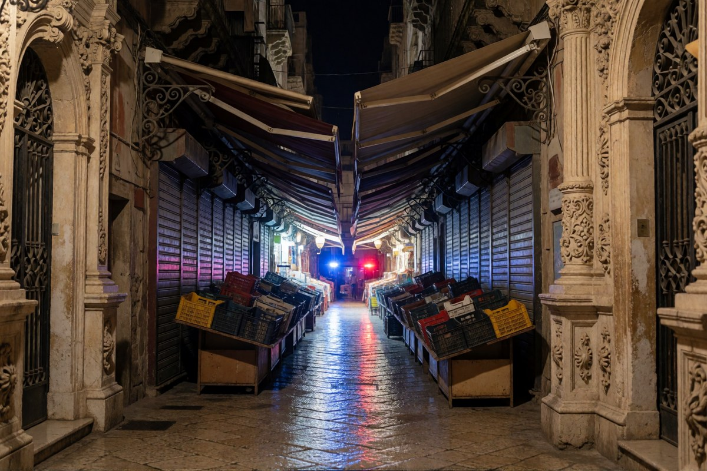

Sicilia · 14 novembre 2026
Ballarò, il bilancio del blitz: 294 identificati e due ristoranti sequestrati

La questura di Palermo rende noti i numeri dei controlli all'Albergheria dopo il funerale show di Emanuele Rubino. Un ventenne in moto ha forzato un posto di blocco e investito un poliziotto.
di Franco Zanghì
Duecentonovantaquattro persone identificate, 110 delle quali con precedenti. È il bilancio del blitz a Ballarò, a Palermo, deciso dopo il funerale show di Emanuele Rubino. I numeri sono quelli del resoconto della questura di Palermo sui controlli di venerdì 13 novembre nel quartiere dell'Albergheria, resi noti il giorno successivo.
Che cosa hanno trovato
I controlli hanno coperto tutto il quartiere, fino a via Maqueda, ai Quattro Canti e a corso Tukory. Due ristoranti sono stati sequestrati, con multe per 22.000 euro, e 230 chili di pesce sono finiti al macero: i proprietari sono stati denunciati per occupazione di suolo pubblico e furto di energia elettrica. In un magazzino condominiale sono stati trovati oltre cento chili di fuochi d'artificio, e cinque persone sono state denunciate.
Poi le strade: 178 mezzi controllati, 64 multe per quasi 60.000 euro, 85 punti decurtati dalle patenti.
Il poliziotto investito
Nel resoconto la questura descrive Ballarò come un'area complessa, con il mercato più antico della città e i locali della vita notturna, ma accanto a quella vitalità indica «sacche di degrado sociale e di criminalità predatoria». I controlli sono arrivati dopo il funerale di Emanuele Rubino, quando il quartiere si era fermato fra petardi e scooter per un corteo funebre diventato uno spettacolo di piazza: era stata quella giornata a far scattare la decisione di presidiare l'Albergheria.
Nel resoconto la questura descrive Ballarò come un'area complessa, con il mercato più antico della città e i locali della vita notturna, ma accanto a quella vitalità indica «sacche di degrado sociale e di criminalità predatoria».
Il punto
Dopo il funerale con i petardi e gli scooter, lo Stato ha passato al setaccio Ballarò: quasi trecento persone identificate, due ristoranti sequestrati, più di un quintale di botti. Sono numeri veri e sono il mestiere della polizia. Ma la domanda resta quella del giorno prima: un blitz dura quanto dura, e il giorno dopo nel quartiere deve restare qualcuno, altrimenti il vuoto lo riempie di nuovo chi lo riempiva prima.
Fonti
- ANSA, il resoconto della questura di Palermo sui controlli all'Albergheria, 14 novembre 2026
- LiveSicilia, i numeri del blitz a Ballarò, 14 novembre 2026